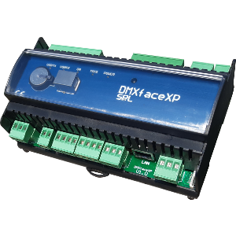

DMXface IP address
Communication port
Last DMX channel used
Request timing power, runtime and additional channels (ms)
Additional channel requests (e.g. IN1,IN7,BUS5,DMX100)
Runtime / power tracking (e.g. OUT1(500),IN1(125),DMX10(1000))
Enable the tracking of min/max values for additional channels
Extended logging info (get more info into the LOG)